feb-meetings
I have a new touch screen for my Raspberry Pi. It's still the same size - 480px by 320px but it is no longer cracked. The touch works! I still have my old touch screen and would like to find a use for it. Attaching it to somewhere that is useful - streaming cat gifs.
Here are some recent artworks created with GIMP:
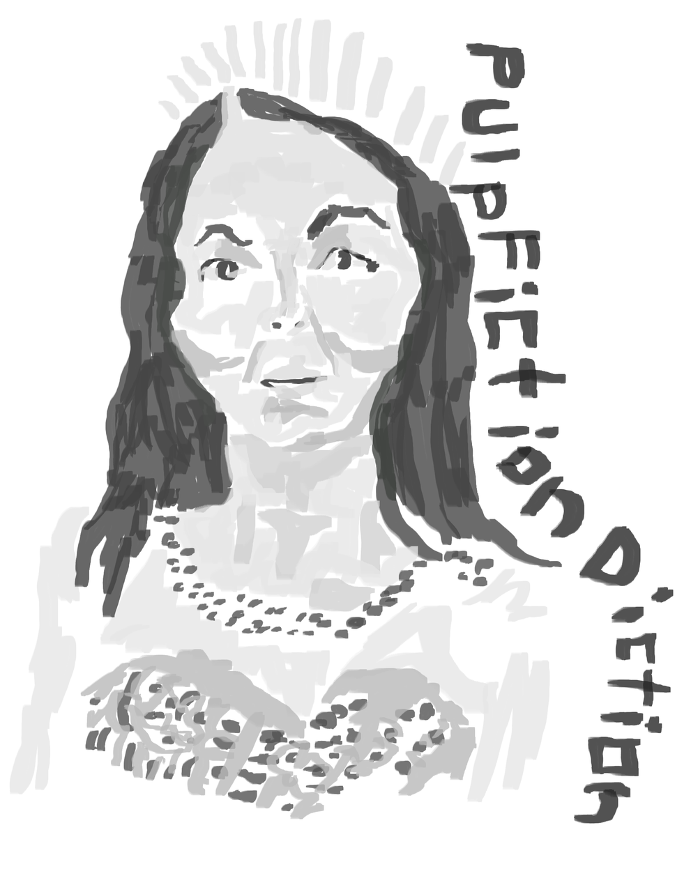
It doesn't happen often but here is a grayscale tonal painting of PulpFictionDiction from getsdrawn. I like painting the text. I have croped this as the rest of the painting was blank.
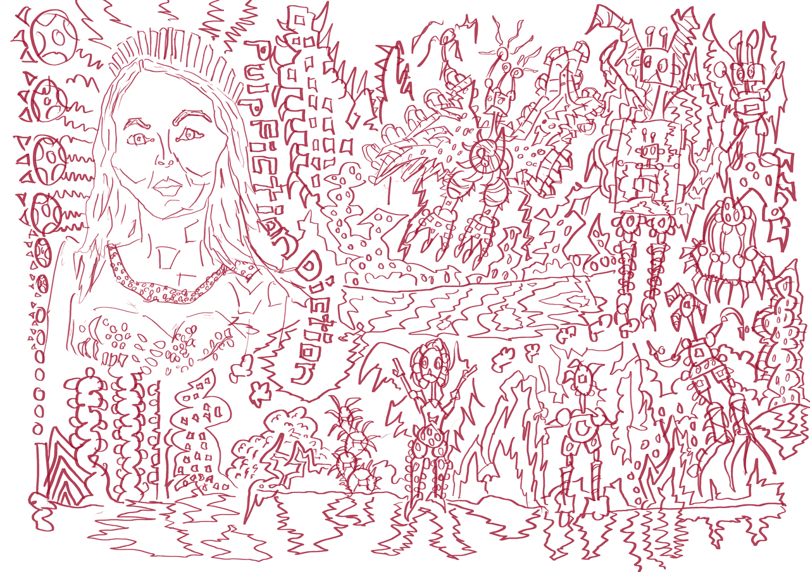
On the top left is the line layer of the previous painting. The rest of the image is sketches of robots and landscapes. Typical.
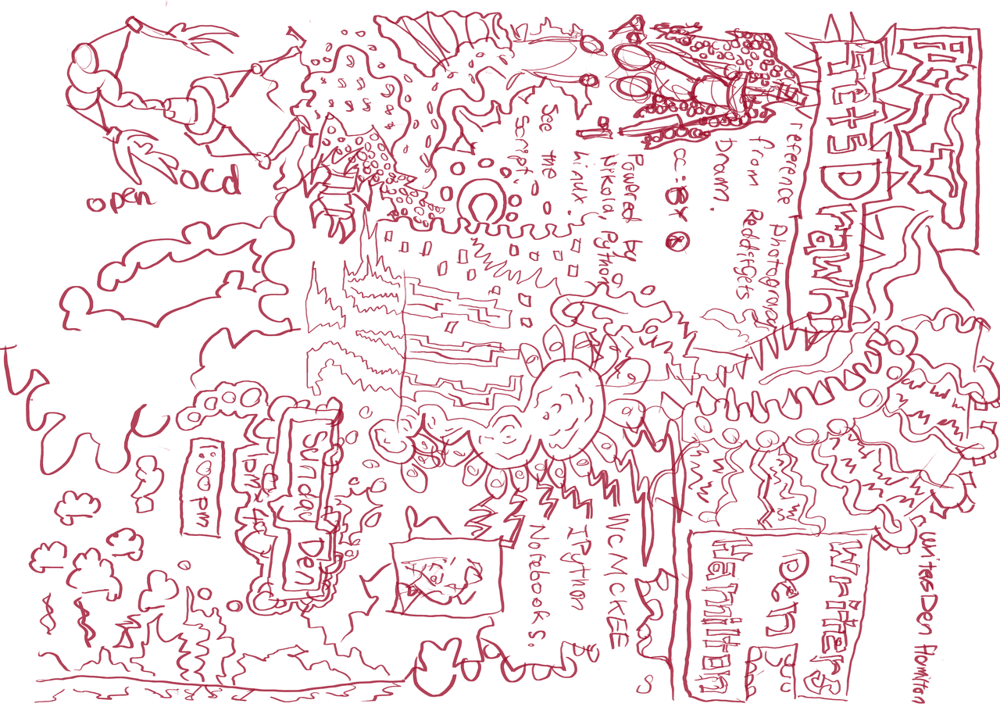
This is sizeways as I had the Raspberry Pi hanging from my bed well I drew. Some of the image is up the correct way - the landscape in the bottom left looks correct. The text is not.
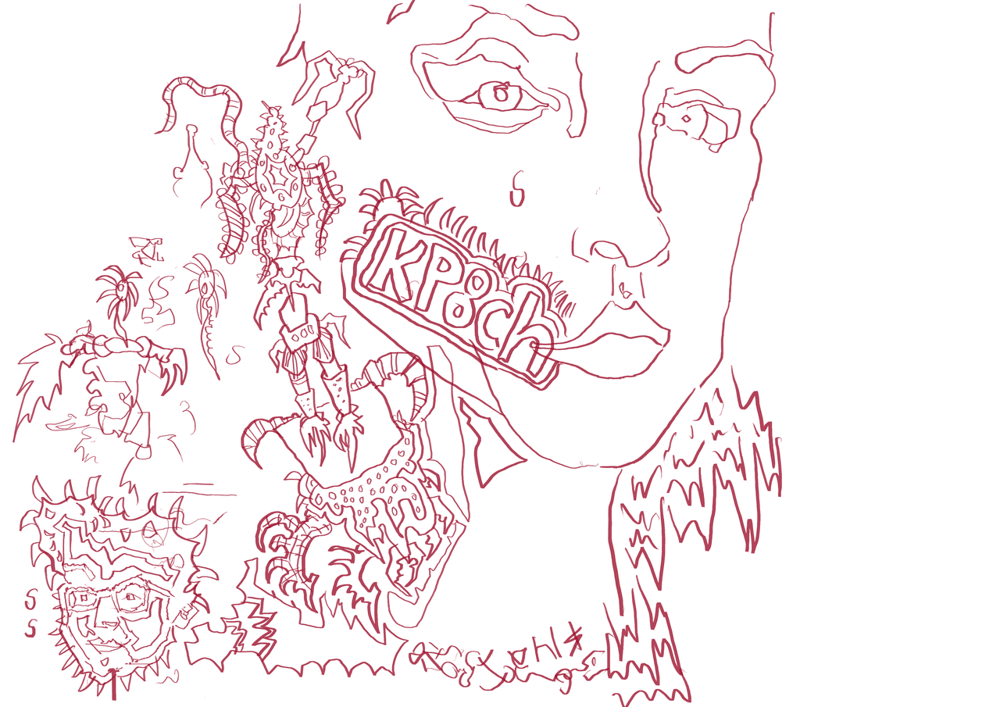
This was drawn at the Hamilton Computer Club. It was the Feb 2016 Thursday meeting. Sadly the meeting was spent sorting 'rules'. I guess it needed to be sorted but I'm looking forward to speakers later on in the year.
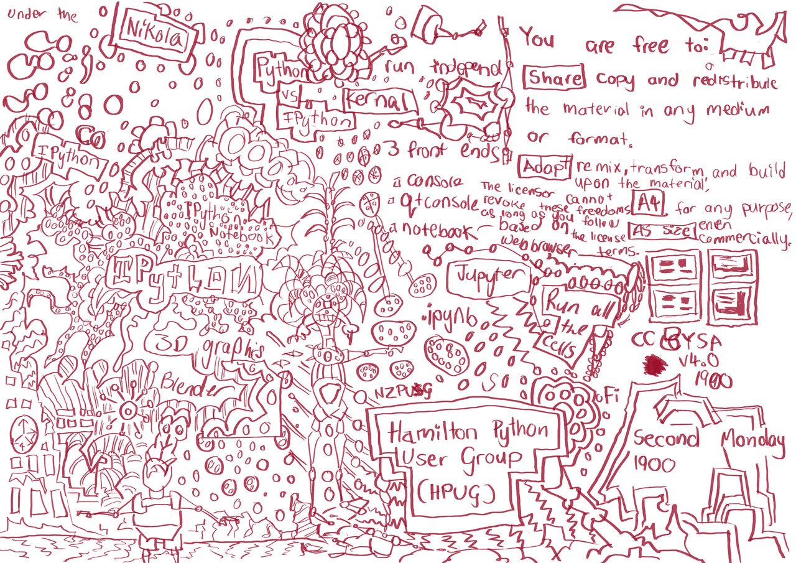
This was drawn during the Hamilton Python User Group. Again this was the Feb 2016 meeting. Lorance did a talk on IPython/Jupyter Notebook. There was also much discussion regarding next months meeting. Next month I will do a talk on Nikola.
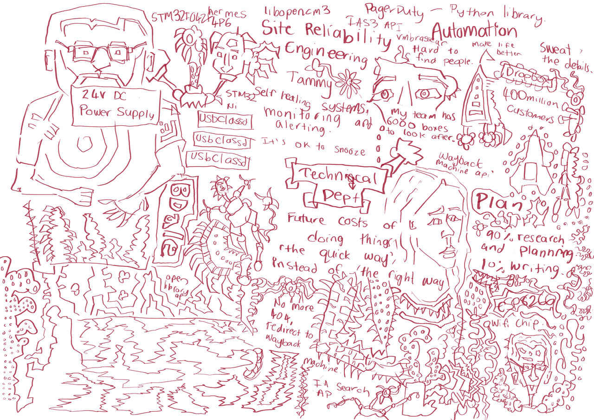
I have been watching Linux Conf Aus videos on my laptop and painting them as I watch them. It is certainly not the experience of being there, but the talk talks are informative.
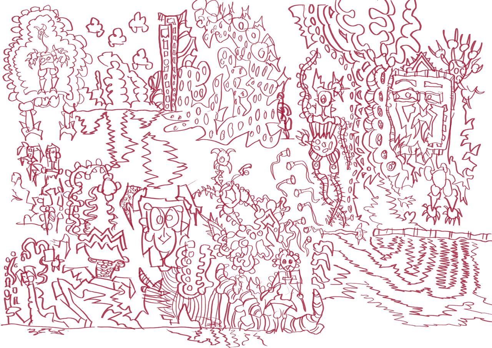
No text, just drawing. Monsters, robots, and landscapes.
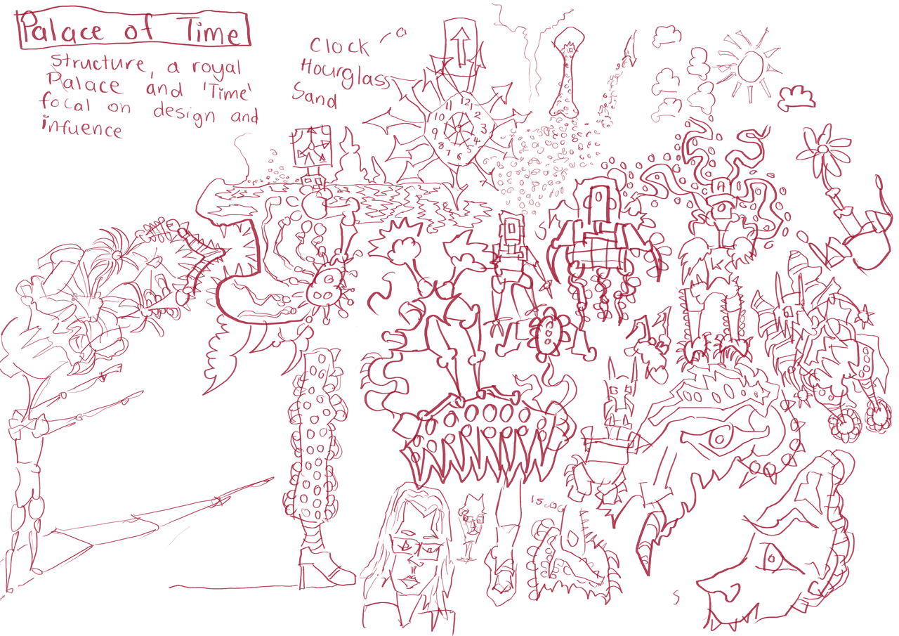
I use to be a big fan of the website conceptart.org especially during my time at The Learning Connextion. It had been awhile since I had visited the site so I took a look. Enviortments on the week was always my favourite. The theme was Palace of Time. I need to visit the site regularly as it is great inspirion for drawing.
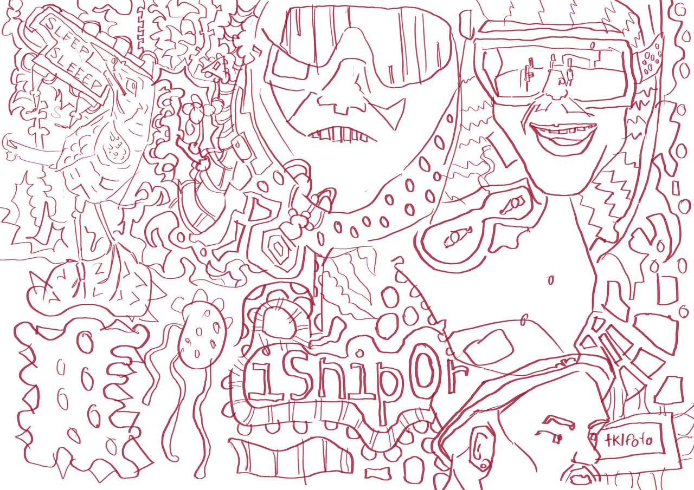
several portraits draw from getsdrawn. isnipor and tklfota.
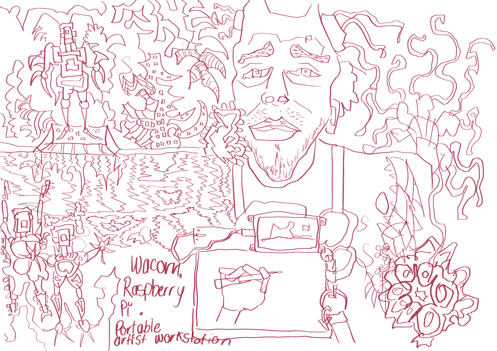
Illustation of my setup and a self portrait.
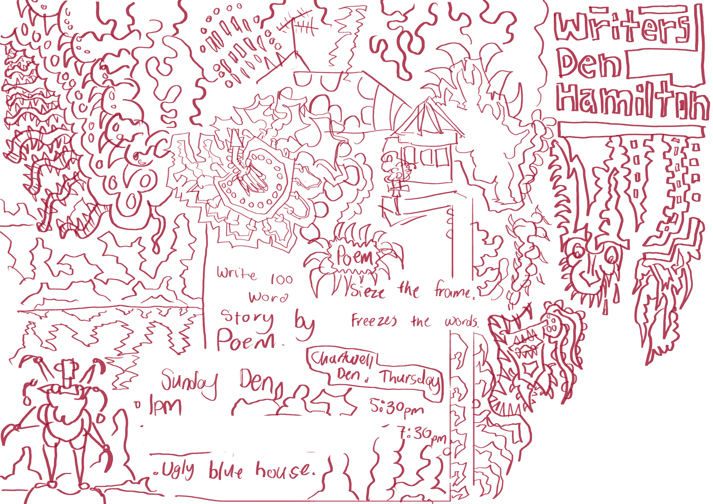
writers den notes during the meeting. I got there late but got quite a bit of drawing completed.
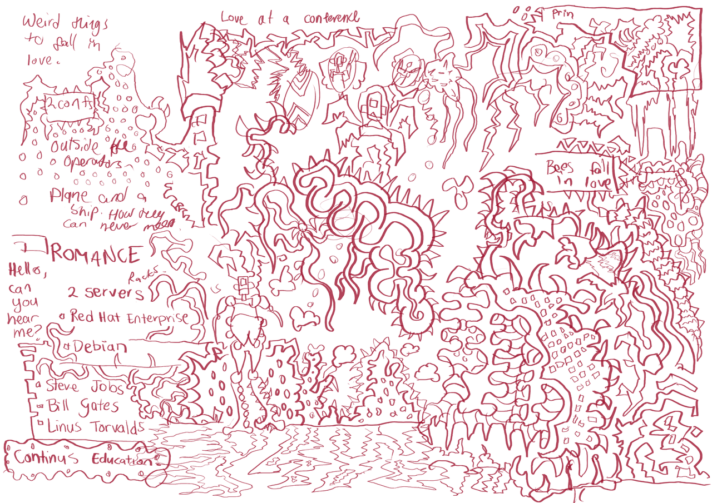
The theme for the next Writers Den Hamilton is romance. It was my idea. I am not going to be at the next meeting but I've been thinking about the theme and have ideas.
This was drawn at the Sunday Den meeting, it was mostly sketching ideas for the romance theme.
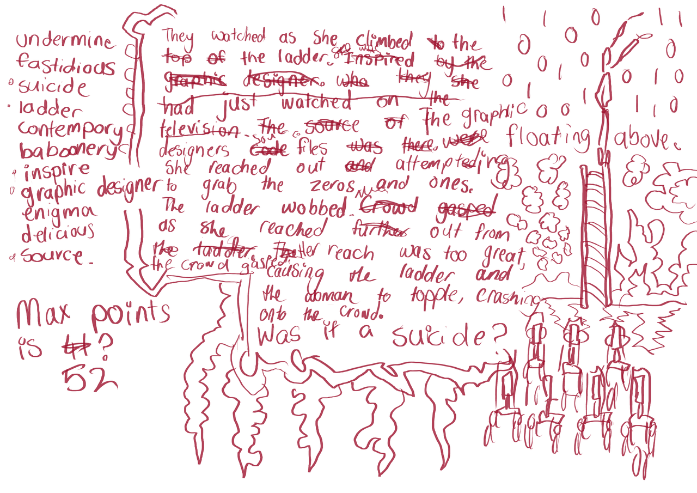
Short story I started during the Wednesday Den meeting. The words on the left of the page are prompts given by each member. We were given ten minutes to come up with a story with the words. A points system was used but it didn't really work. Who's counting?
Comments
Comments powered by Disqus